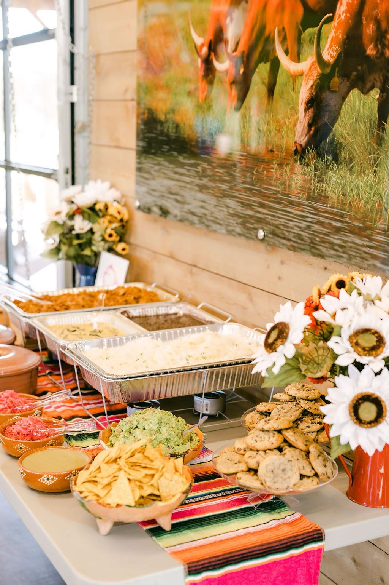
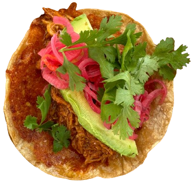
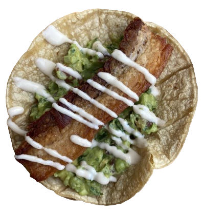
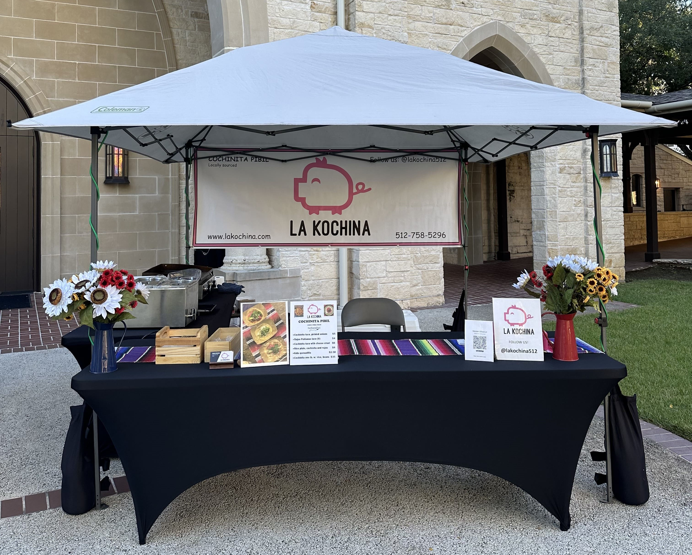
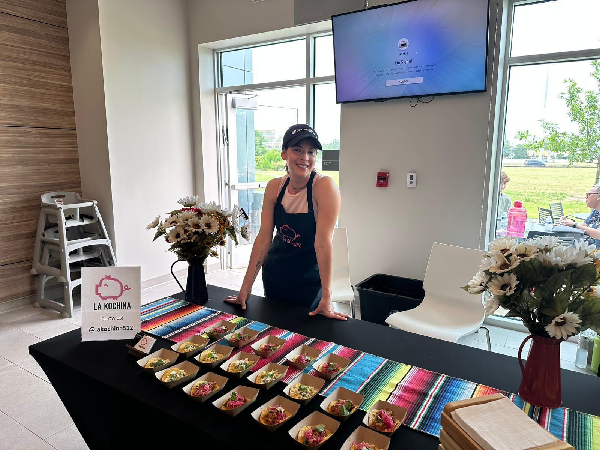

Available for private hire · Farmers Market every Friday · Catering for events of all sizes

Discover the taste of tradition with our Cochinita Pibil, a slow-roasted Mayan pork dish from the Yucatán Peninsula. Marinated in citrus juice, annatto seed, and roasted in a píib wrapped in banana leaf. Served with pickles, onions, and green salsa.
12h
Slow cooked
100%
Authentic
🌶
Mild heat

Indulge in the timeless delight of Classic Chicharron, deep-fried pork skin seasoned to perfection and traditionally fried in its own lard. Accompanied by chipotle salsa, fresh cilantro, and onions. A popular choice for crafting mouthwatering tacos.
🔥
Deep fried
100%
Pork belly
🌶🌶
Med. heat
Hire the entire La Kochina stand for your corporate event, wedding, birthday, or festival. We handle everything — from setup to cleanup.
We arrive, cook, and leave your venue spotless
Tailor the dishes to your event's needs
From 30 to 300+ guests, we've got you covered
Events
Years
Max Guests

Starting from
$20
per person
Min. 30 guests
Open every
FRIDAY
3:00 – 6:00 PM
— Mariam O'Donnell

Mariam O'Donnell (Founder/Owner) is a graduate of the Le Cordon Bleu College of Culinary Arts in Austin, TX. Driven to bring authentic interior-Mexican cuisine from her homeland, La Kochina was born.
Our services include Cochinita Pibil, Chicharron, homemade salsas, guacamole, and desserts. We provide catering and full stand hire for events of all sizes. Delivery available.